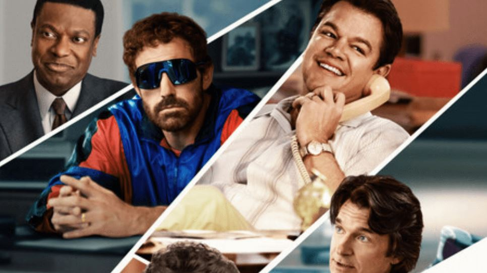

"Air, la amistad hecha mancuerna"
enero,5 2023
Volver a Series
Una de las amistades más mediáticas y sólidas de Hollywood es la de Ben Affleck y Matt
Damon y
aunque han consolidado una carrera por separado, cada vez se juntan en pantalla hacen un
gran
dueto. Te presentamos la reseña de Air, la película que reúne a estos dos amigos para
hacer un
homenaje a un grande del deporte.
La película cuenta la historia de Phil Knight (Ben Affleck) y Sonny Vaccaro (Matt
Damon), los
hombres encargados de reclutar a un joven Michael Jordan para crear un par de tenis que salvaran
a Nike. Con ayuda de un talentoso equipo Vaccaro logra una de las mejores colaboraciones
entre
una marca y un atleta.
Director: Ben Affleck
Guion: Alex Convery
Reparto: Matt Damon, Ben Affleck, Viola Davis, Jason Bateman
País: Estados Unidos
Trailér